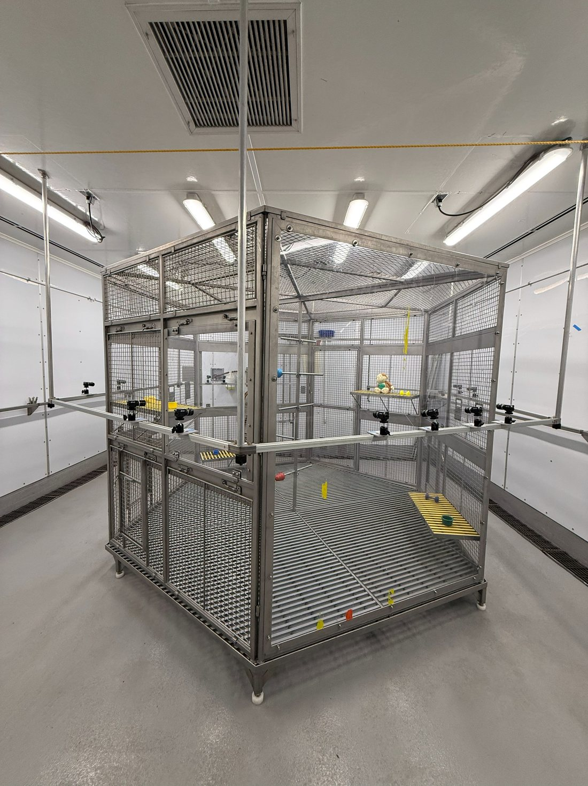
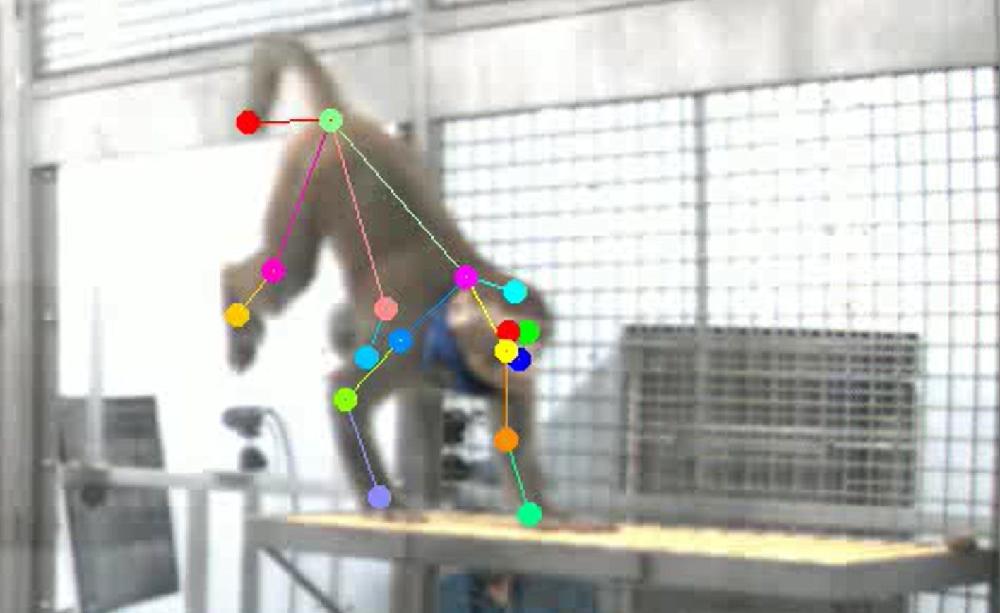
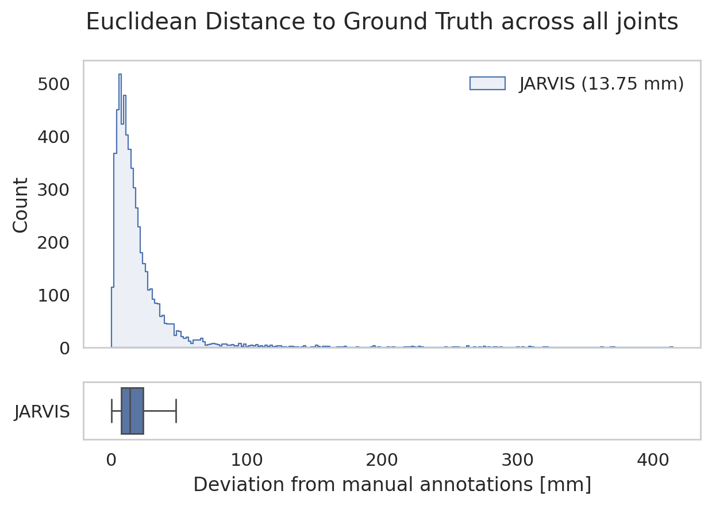
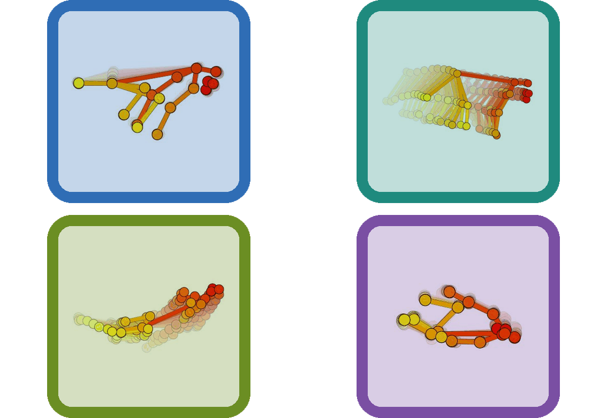
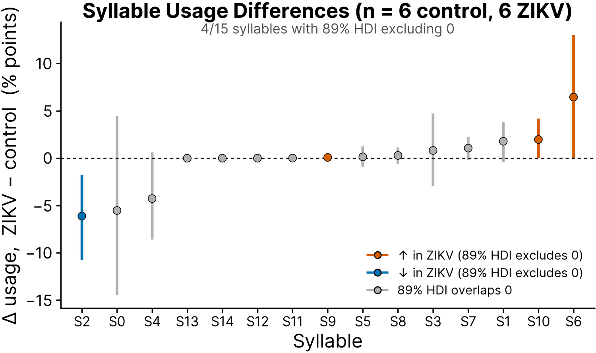
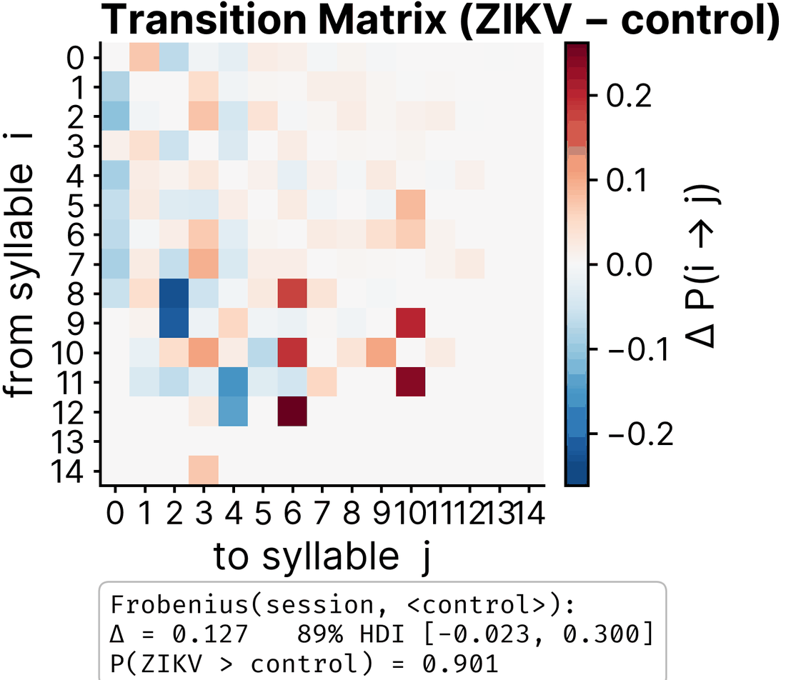

A slip anyone can see
© Emory National Biomedical Research Center, Emory University. All rights reserved.
A young macaque jumps for a ledge and one foot misses. Anyone watching can see it. My colleagues spent hours watching video and counting moments like this one, and the count was clear: juveniles that had been infected with Zika virus soon after birth lost their balance more often than healthy ones.

© Emory National Biomedical Research Center, Emory University. All rights reserved.
But a fall is the end of a story. By the time a movement problem is obvious enough for a person to count, it has probably existed for a while in forms nobody notices: an odd choice of what to do next, a sequence that does not quite flow. A person with a checklist cannot score that.
The point was not to do the counting faster. It was to see what counting cannot.
Building the tracking setup
The animals play in a large hexagonal cage. Around it is a t-rail frame holding 12 machine-vision cameras (FLIR Blackfly S), mounted on five of the cage's six sides. A hardware trigger fires all twelve at the same instant, up to 60 times a second, and the uncompressed video streams over a 120 Gbps network to a custom-built computer with fast solid-state storage.


© Emory National Biomedical Research Center, Emory University. All rights reserved.
Two decisions mattered most. The first was synchronization. To find where a wrist is in space, you need to see it in several images taken at exactly the same moment. If the cameras drift apart in time, a fast-moving limb appears to be in two places at once. The second was redundancy. A monkey climbing a mesh wall is always hidden from somebody. With twelve views, when one camera loses a limb, another usually still has it.
None of this was guaranteed to work. For under $50,000, we created an end-to-end hardware-software pipeline that demonstrably catches subtle movement differences.
Teaching it to see
A camera records pixels. To get from pixels to a body, a neural network has to learn where the joints are, and it learns from examples that people label by hand.

© Emory National Biomedical Research Center, Emory University. All rights reserved.
I defined 17 landmarks (nose, eyes, head, neck, shoulders, elbows, wrists, hip, knees, feet and tail) and wrote the protocol for labeling them. Which frames get labeled matters as much as how many. An algorithm picks frames that are as different from one another as possible, across poses and across animals, so the network sees the rare postures too and not ten thousand copies of a monkey sitting still. More than 65,000 frames have been labeled so far, with help from an outside annotation team. The model behind the results on this page was trained on about 30,000 of them; a final model trained on all of them comes next.
The network is JARVIS-HybridNet, a 3D convolutional network written in PyTorch. It finds each landmark in the camera views and combines them into one position in space. A training run takes about four days on Emory's HyPER C3 GPU cluster.
How good is it?
I measure the network against people: for each landmark, how far is its 3D estimate from where a human annotator placed it?


© Emory National Biomedical Research Center, Emory University. All rights reserved.
On average, 13.75 millimeters, less than the width of a dime. The face is easiest (nose and eyes, around 10 mm) and the tail is hardest (about 29 mm), which makes sense: it moves the most and hides the most. Every landmark averages under 30 mm.
The average hides a tail of its own, the statistical kind. Most estimates land within a few millimeters, but a small share are far off, mostly during fast movements when a limb blurs or disappears. Smoothing over time repairs many of these. More labeled frames should repair more, and the labeling continues.
From coordinates to behavior
Seventeen points moving through space are not yet behavior. The usual next step is for a person to decide which behaviors matter and count them, which brings back the limit I was trying to escape: you find only what you already thought to look for.
So I used a tool that breaks down movement like language: Keypoint-MoSeq. Speech is built from a small set of syllables, reused and recombined. Movement seems to work the same way. An unsupervised model trained using Keypoint-MoSeq (an autoregressive hidden Markov model) reads the stream of 3D poses and, with no labels at all, discovers short chunks of movement, each a little over a second long, that the animals use again and again. These are the “syllables” that make up behaviors such as walking and climbing. The order they come in is the grammar.

© Emory National Biomedical Research Center, Emory University. All rights reserved.
There was a catch. The tool was built and validated for mice, and a macaque is not a large mouse. Its movements unfold over longer timescales, and the model's key setting, the one that controls how long a syllable lasts, is tuned to mice. So I measured how quickly the macaques' own poses change over time (their autocorrelation) and set the model's timescale from that. The result was 15 stable syllables across about a million frames.
What the instrument saw
I compared 6 animals that had been infected with Zika virus as infants with 6 controls, over 28 recording sessions.
The infected animals used some syllables more and others less: 4 of the 15 differed credibly between the groups. The more interesting difference was in the grammar. Given what an animal is doing now, how well can you predict what it will do next? For healthy animals, fairly well. For the infected animals, less well. The entropy of their transitions, a measure of unpredictability, was higher by 0.16 bits (89% interval: 0.01 to 0.31; probability that the increase is real: 96%).

© Emory National Biomedical Research Center, Emory University. All rights reserved.
What did not change is as informative as what did. The infected animals did not switch between movements more often, and each movement lasted as long as it did in controls. They commit to a movement just as healthy animals do. What differs is what comes next.
Each movement looks normal. Only the order is off, and no one watching could see it.


© Emory National Biomedical Research Center, Emory University. All rights reserved.
What I do not know yet
Six animals per group is a small study. The models I use are Bayesian, so each answer comes as a range and not a verdict, and some of the ranges are wide. One result, an overall drift in transition patterns away from the healthy average, points the same way but could still be chance (probability 90%), and I report it as suggestive and nothing more. The analysis treats recording sessions as independent, which they are not quite. The syllables do not have names yet: I can show that one is used more often, but cannot yet say that it is climbing. And the method itself is new to primates.
Next come more labeled frames, all 24 animals, direct measurements of gait and balance, and names for the syllables. The same system is now being applied to a macaque model of Parkinson's disease. Nothing in it is specific to Zika. All it needs is cameras.
Recognition. Selected for a press conference at the Society for Neuroscience's 2026 meeting, one of 30–40 abstracts chosen from 8,000–10,000 submitted. Best Poster Award, EPC Research Day Symposium, Emory (2024). Supported in part by a $50,000 pilot grant on which I am Co-PI.
With Rebecca Richardson, Alex van Schoor, Kaitlyn Love, Praneet Bala, Gordon Ramsay, Mehul Suthar, Ann Chahroudi and Jessica Raper (principal investigator), at the Emory National Biomedical Research Center. Funded by a Pediatric Research pilot grant through the Marcus Autism Center, the National Institute of Neurological Disorders and Stroke (R01 NS120182) and the center's base grant (P51 OD011132).
Earlier work on balance in this model: Raper et al. (2020), Nature Communications 11:2534.